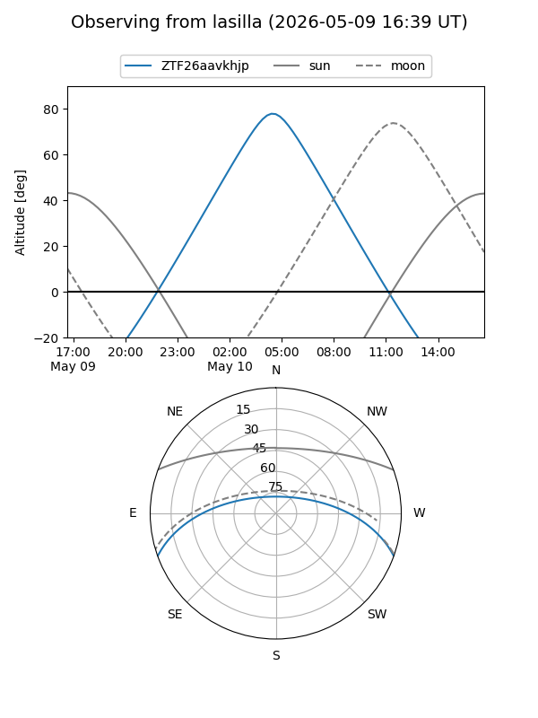
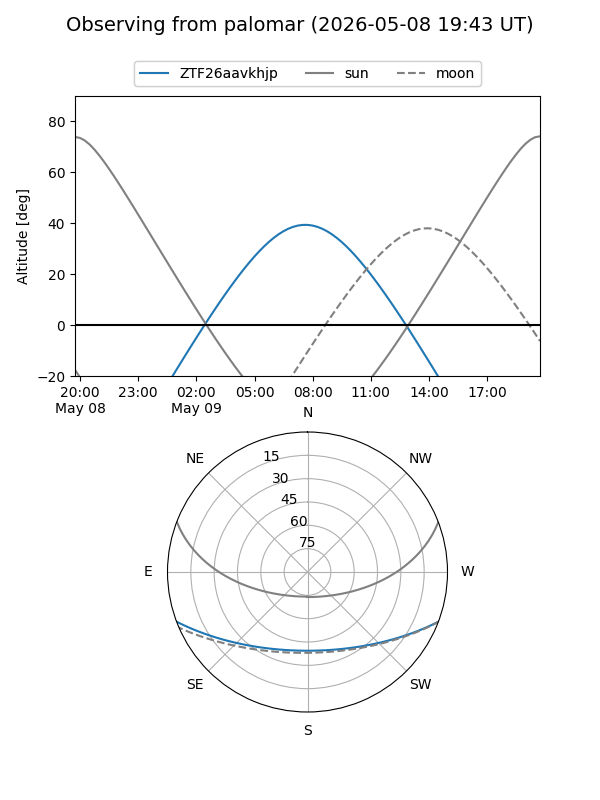

ZTF26aavkhjp
Target ZTF26aavkhjp at 2026-05-09 10:00
Aliases and brokers:
FINK: link
Lasair: link
ALeRCE: link
alt names
ZTF26aavkhjp (ztf,fink_ztf)
Coordinates:
equatorial (ra, dec) = 224.1326,-17.14458
equatorial (HMS+DMS) = 14:56:31.83,-17:08:40.49
galactic (l, b) = (340.9385,+36.33154)
Flags:
Photometry:
last ztfg=18.16
1 ztfg detections
Lightcurve
Visibility


Additional plots